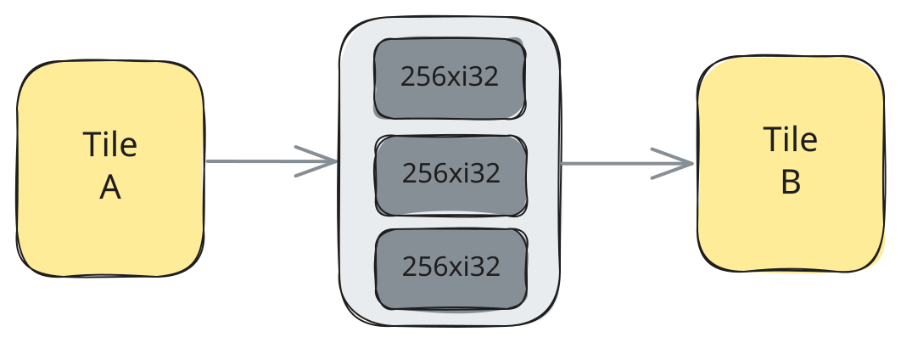
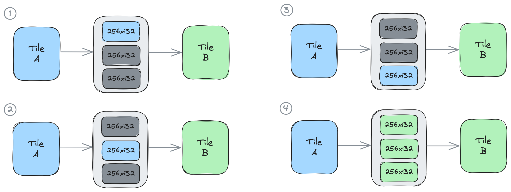
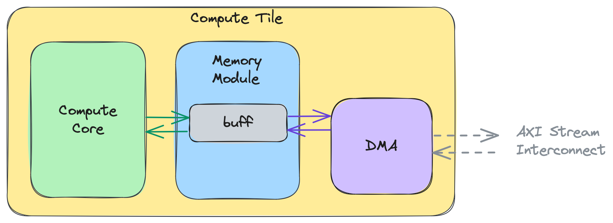
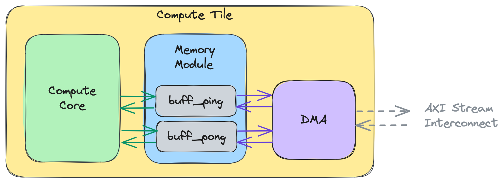

Section 2a - Introduction¶
Initializing an ObjectFifo¶
An ObjectFifo represents the data movement connection between a source and one or multiple destinations. The endpoints of the ObjectFifo are inferred based on its usage in the rest of the program. With IRON, the ObjectFifo can be initialized using the ObjectFifo class constructor (defined in objectfifo.py):
class ObjectFifo(Resolvable):
def __init__(
self,
obj_type: type[np.ndarray],
depth: int | None = 2,
name: str | None = None,
dims_to_stream: list[Sequence[int]] | None = None,
dims_from_stream_per_cons: list[Sequence[int]] | None = None,
plio: bool = False,
)
depth objects; by default it is set to 2 which represents double or ping-pong buffering. All objects in an ObjectFifo have to be of the same obj_type datatype. The datatype is a tensor-like attribute where the size of the tensor and the type of the individual elements are specified at the same time (i.e. np.ndarray[(16,), np.dtype[np.int32]]). The name input must be unique and can either be given by the user or left empty for the compiler to complete. It is required for subsequent lowering steps in the compiler flow.
As it traverses the AIE array, data can be restructured using the capabilities of Direct Memory Access channels (DMAs). These components are explained in more detail here, however as a quick introduction, DMAs exist at every tile in the array and they are responsible for taking data arriving on the AXI stream interconnect and writing it into the tile's local memory, and inversely. DMAs can be given access patterns to express the order in which data should be sent onto the AXI stream by the ObjectFifo's producer (using the dims_to_stream input) or read from it by each consumer (using the dims_from_stream_per_cons input). These inputs have their own dedicated section (see Data Layout Transformations in section-2c). The plio input can be used when one of the ObjectFifo's endpoints is a Shim tile to indicate to the compiler that the communication should be wired through a dedicated plio port.
Below is an example of how to initialize an ObjectFifo named in of datatype <256xi32> with depth 3:
# Define tensor types
line_size = 256
line_type = np.ndarray[(line_size,), np.dtype[np.int32]]
# Dataflow with ObjectFifos
of_in = ObjectFifo(line_type, name="in", depth=3)
ObjectFifo endpoints are separated into producers and consumers, where an ObjectFifo may only have one producer and one or multiple consumers. These endpoints are also referred to as the "actors" of the ObjectFifo, based on dataflow theory terminology. At this level of abstraction the endpoints are typically Workers that have access to ObjectFifoHandles, with one other use case being when an ObjectFifo is filled from or drained to external memory at runtime (as explained in the Runtime Data Movement section).
The code snippet below shows two Workers running processes defined by core_fn and core_fn2 which take as input a producer or a consumer handle for of_in respectively:
# Dataflow with ObjectFifos
of_in = ObjectFifo(line_type, name="in", depth=3)
# External, binary kernel definition
test_fn = Kernel(
"test_func",
"test_func.cc.o",
[line_type, np.int32],
)
test_fn2 = Kernel(
"test_func2",
"test_func2.cc.o",
[line_type, np.int32],
)
# Tasks for the cores to perform
def core_fn(of_in, test_func):
# ...
def core_fn2(of_in, test_func2):
# ...
# Create workers to perform the tasks
my_worker = Worker(core_fn, [of_in.prod(), test_fn])
my_worker2 = Worker(core_fn2, [of_in.cons(), test_fn2])
prod() will return a reference to the same ObjectFifoHandle, whereas each call of cons() will return a reference to a new ObjectFifoHandle for that consumer process.
At the beginning of this section it was mentioned that the compiler can infer the endpoints of an ObjectFifo based on its usage. This specifically refers to the usage of the ObjectFifoHandles which can be used to collect the producer and consumers of an ObjectFifo. One can thus observe different data movement patterns which are the subject of the next section.
During the next steps of the compiler flow, the ObjectFifo producer and consumer Worker processes are mapped to explicit AIE tiles (see Section 1 - Basic AI Engine building blocks) by the --aie-place-tiles compiler pass (defined in AIEPlaceTiles.cpp). Under the hood, the data movement configuration for different types of tiles (Shim tiles, Mem tiles, and Compute tiles) is different, but there is no difference between them when using an ObjectFifo.
The same ObjectFifo is also constructible directly from the AIE dialect (the form @iron.jit ultimately compiles to). Users who need fine control over placement or the underlying MLIR can use the object_fifo class constructor in aie.py:
class object_fifo:
def __init__(
self,
name,
producerTile,
consumerTiles,
depth,
datatype: MemRefType | type[np.ndarray],
dimensionsToStream=None,
dimensionsFromStreamPerConsumer=None,
initValues=None,
via_DMA=None,
plio=None,
disable_synchronization=None,
)
dimensionsToStream and dimensionsFromStreamPerConsumer inputs have their own dedicated section (see Data Layout Transformations in section-2c).
Just like in the IRON form, the ObjectFifo functions as an ordered buffer that has a count of depth objects of specified datatype. Currently, all objects in an ObjectFifo have to be of the same datatype. The datatype is a tensor-like attribute where the size of the tensor and the type of the individual elements are specified at the same time (i.e. <16xi32>). Unlike before, the depth can be defined as either an integer or an array of integers. The latter is explained further down in this section.
An ObjectFifo is created between a producer, or source tile, and a consumer, or destination tile. The tiles are where producer and consumer processes accessing the ObjectFifo will be executed. These processes are also referred to as the "actors" of the ObjectFifo, based on dataflow theory terminology. Below, you can see an example where of_in is created between producer tile A and consumer tile B with depth 3:
A = tile(1, 3)
B = tile(2, 4)
of_in = object_fifo("in", A, B, 3, np.ndarray[(256,), np.dtype[np.int32]])
of_in where no assumptions are made about where the tiles and the ObjectFifo resources are placed:

As you will see in the "Key ObjectFifo Patterns" section, an ObjectFifo can have multiple consumer tiles, which describes a broadcast connection from the source tile to all of the consumer tiles. As such, the consumerTiles input can be either a single tile or an array of tiles. This is not the case for the producerTile input, as currently the ObjectFifo does not support multiple producers.
Accessing the objects of an ObjectFifo¶
An ObjectFifo can be accessed by the producer and consumer processes registered to it. Before a process can have access to the objects, it has to acquire them from the ObjectFifo. This is because the ObjectFifo is a synchronized communication primitive that leverages the synchronization mechanism available in the target hardware architecture to ensure that two processes cannot access the same object at the same time. Once a process has finished working with an object and has no further use for it, it must release it so that another process will be able to acquire and access it. The patterns in which a producer or a consumer process acquires and releases objects from an ObjectFifo are called "access patterns". We can specifically refer to the acquire and release patterns as well.
The _acquire() function is used to acquire one or multiple objects from an ObjectFifo:
num_elem input representing the number of acquired elements, the function will either directly return an object, or an array of objects. The port input is explained further in this section.
The ObjectFifo is an ordered primitive and the API keeps track for each process which object is the next one that they will have access to when acquiring, based on how many they have already acquired and released. Specifically, the first time a process acquires an object it will have access to the first object of the ObjectFifo, and after releasing it and acquiring a new one, it'll have access to the second object, and so on until the last object, after which the order starts from the first one again. When acquiring multiple objects and accessing them in the returned array, the object at index 0 will always be the oldest object that process has access to, which may not be the first object in the pool of that ObjectFifo.
The _release() function is used to release one or multiple objects:
When acquiring the objects of an ObjectFifo it is important to note that any unreleased objects from a previous acquire will also be returned by the most recent acquire call. Unreleased objects will not be reacquired in the sense that the synchronization mechanism used under the hood has already been set in place such that the process already has the sole access rights to the unreleased objects from the previous acquire. As such, two acquire calls back-to-back without a release call in-between will result in the same objects being returned by both acquire calls. This decision was made to facilitate the understanding of releasing objects between calls to the acquire function as well as to ensure a proper lowering through the ObjectFifo primitive. A code example of this behaviour is available in the "Key ObjectFifo Patterns" section.
The port input of both the acquire and the release functions represents whether that process is a producer or a consumer process at the lower level of ObjectFifo abstraction and it is an important indication for the ObjectFifo lowering to properly leverage the underlying synchronization mechanism. Its value may be either ObjectFifoPort.Produce or ObjectFifoPort.Consume. However, an important thing to note is that the terms producer and consumers are used mainly as a means to provide a logical reference for a human user to keep track of what process is at what end of the data movement, but it does not restrict the behaviour of that process, i.e., a producer process may simply access an object to read it and is not required to modify it.
Below you can see an example of two processes that are iterating over the objects of the ObjectFifo of_in that we initialized in the previous section, one accessing its producer handle and the other accessing the consumer handle. To do this, the producer process runs a loop of three iterations, equal to the depth of of_in, and during each iteration it acquires one object from of_in, calls a test_func function on the acquired object, and releases the object. The consumer process only runs once and acquires all three objects from of_in at once and stores them in the elems array, from which it can access each object individually in any order. It then calls a test_func2 function three times and in each call it gives as input one of the objects it acquired, before releasing all three objects at the end.
# Dataflow with ObjectFifos
of_in = ObjectFifo(line_type, name="in", depth=3)
# External, binary kernel definition
# ...
# Tasks for the cores to perform
def core_fn(of_in, test_func):
for _ in range_(3):
elemIn = of_in.acquire(1)
test_func(elemIn, line_size)
of_in.release(1)
def core_fn2(of_in, test_func2):
elems = of_in.acquire(3)
test_func2(elems[0], line_size)
test_func2(elems[1], line_size)
test_func2(elems[2], line_size)
of_in.release(3)
# Create workers to perform the tasks
my_worker = Worker(core_fn, [of_in.prod(), test_fn])
my_worker2 = Worker(core_fn2, [of_in.cons(), test_fn2])
The closer-to-metal API variants of the acquire() and release() functions of the object_fifo class are shown below:
@iron.jit compiles to) with explicit tile endpoints.
A = tile(1, 3)
B = tile(2, 4)
of_in = object_fifo("in", A, B, 3, np.ndarray[(256,), np.dtype[np.int32]])
@core(A)
def core_body():
for _ in range_(3):
elem0 = of_in.acquire(ObjectFifoPort.Produce, 1)
test_func(elem0)
of_in.release(ObjectFifoPort.Produce, 1)
@core(B)
def core_body():
elems = of_in.acquire(ObjectFifoPort.Consume, 3)
test_func2(elems[0])
test_func2(elems[1])
test_func2(elems[2])
of_in.release(ObjectFifoPort.Consume, 3)
The figure below illustrates this code: Each of the 4 drawings represents the state of the system during one iteration of execution. In the first three iterations, the producer process on tile A, drawn in blue, progressively acquires and releases the elements of of0 one by one. Once the third element has been released in the fourth iteration, the consumer process on tile B, drawn in green, is able to acquire all three objects at once.

Examples of designs that use these features are available in Section 2f: 01_single_double_buffer and 02_external_mem_to_core.
ObjectFifos with the same producer / consumer¶
An ObjectFifo can be created with the same tile as both its producer and consumer tile. This is mostly done to ensure proper synchronization within the process itself, as opposed to synchronization across multiple processes running on different tiles, as we have seen in examples up until this point. Composing two kernels with access to a shared buffer is an application that leverages this property of the ObjectFifo, as showcased in the code snippet below, where test_func and test_func2 are composed using of0:
# Dataflow with ObjectFifos
of0 = ObjectFifo(line_type, name="objfifo0", depth=3)
# External, binary kernel definition
# ...
# Tasks for the cores to perform
def core_fn(of_in, of_out, test_func, test_func2):
for _ in range_(3):
elemIn = of_in.acquire(1)
test_func(elemIn, line_size)
of_in.release(1)
elemOut = of_out.acquire(1)
test_func2(elemOut, line_size)
of_out.release(1)
# Create workers to perform the tasks
my_worker = Worker(core_fn, [of0.prod(), of0.cons(), test_fn, test_fn2])
@iron.jit compiles to) with explicit tile endpoints:
A = tile(1, 3)
of0 = object_fifo("objfifo0", A, A, 3, np.ndarray[(256,), np.dtype[np.int32]])
@core(A)
def core_body():
for _ in range_(3):
elem0 = of0.acquire(ObjectFifoPort.Produce, 1)
test_func(elem0)
of0.release(ObjectFifoPort.Produce, 1)
elem1 = of0.acquire(ObjectFifoPort.Consume, 1)
test_func2(elem1)
of0.release(ObjectFifoPort.Consume, 1)
Specifying the ObjectFifo Depth as an Array¶
The AIE architecture is a spatial architecture that requires explicit data movement. As such, while the ObjectFifo's conceptual design is that of an ordered buffer between two or more AIE tiles, in reality its conceptual depth is spread out over multiple resource pools that may be located at different levels of the memory hierarchy and on different tiles.
A more in-depth, yet still abstract, view of the ObjectFifo's depth is that the producer and each consumer have their own working resource pool available in their local memory modules which they can use to send and receive data in relation to the data movement described by the ObjectFifo. The ObjectFifo primitive and its lowering typically allocate the depth of each of these pools such that the resulting behaviour matches that of the conceptual depth.
The user does however have the possibility to manually choose the depth of these pools. This feature is available because, while the ObjectFifo primitive tries to offer a unified representation of the data movement across the AIE array, it also aims to provide performance programmers with the tools to control it more finely. This feature is available in the AIE dialect ObjectFifo.
For example, in the code snippet below of0 describes the data movement between producer A and consumer B:
A = tile(1, 3)
B = tile(2, 4)
of0 = object_fifo("objfifo0", A, B, 3, np.ndarray[(256,), np.dtype[np.int32]])
3. The reasoning behind this choice of depth can be understood by looking at the acquire and release patterns of the two actors:
@core(A)
def core_body():
for _ in range_(9):
elem0 = of0.acquire(ObjectFifoPort.Produce, 1)
produce_func(elem0)
of0.release(ObjectFifoPort.Produce, 1)
@core(B)
def core_body():
for _ in range_(9):
elems = of0.acquire(ObjectFifoPort.Consume, 2)
consume_func(elems[0], elems[1])
of0.release(ObjectFifoPort.Consume, 2)
produce_func to store new data in it for B to consume, and releases the object,
* consumer B acquires two objects to consume, reads the data and applies kernel function consume_func, then releases both objects.
A conceptual depth of 2 would have sufficed for this system to function without deadlocking. However, with a depth of 3, A and B can execute concurrently, i.e., while B consumes two objects and applies the kernel function, A has one object available into which it can produce at the same time.
The equivalent of this conceptual depth of 3 using an array of depths would be:
2 is the number of resources available locally to producer A and 3 is the number available to consumer B.
NOTE: For a correct lowering, this feature should be used in situations where the producers and consumers of the ObjectFifo are running on different tiles.
The feature of specifying the depths of the resource pools for different actors of the ObjectFifo is used to support a specific dependency that can arise when working with multiple ObjectFifos and it is further explained in the "Key ObjectFifo Patterns" section.
Additional Inputs of the ObjectFifo¶
So far, this section has introduced the mandatory inputs of the ObjectFifo. This part of the guide will focus on the remaining inputs and explain what part they play in guiding the ObjectFifo lowering.
class object_fifo:
def __init__(
...
initValues=None,
via_DMA=None,
plio=None,
disable_synchronization=None,
)
dimensionsToStream and dimensionsFromStreamPerConsumer inputs have their own dedicated section (see Data Layout Transformations in section-2c).
Upon instantiation of an ObjectFifo it is possible to initialize its objects by providing an array of initial values to the initValues input. This is shown in the code snippet below where the two objects of of0 are respectively initialized with the arrays [0, 1, 2, 3] and [4, 5, 6, 7]:
A = tile(1, 3)
B = tile(2, 4)
of0 = object_fifo(
"of0",
A,
B,
2,
np.ndarray[(2, 2), np.dtype[np.int32]],
initValues=[
np.arange(4, dtype=np.int32),
np.arange(4, 8, dtype=np.int32)
],
)
datatype of the ObjectFifo. To help with this process, the ObjectFifo API will try to reshape the given initial values. In the example above the initial values will be reshaped as [[0, 1], [2, 3]] and [[4, 5], [6, 7]] to match the <2x2xi32> datatype.
When an ObjectFifo is initialized upon creation, the underlying synchronization mechanism is set in such a way that the producer of the ObjectFifo cannot immediately acquire new objects to ensure that the initial values are not overwritten by new data before the consumers have had time to read it.
The remaining inputs of the ObjectFifo are considered an advanced topic and are not required to understand the rest of this guide.
The via_DMA input of the ObjectFifo is used mostly for debug or benchmarking purposes. It can be set to true to enforce that the lowered data movement configuration use the Direct Memory Access channels (or "DMAs") of the tiles. The DMAs are described further in the Advanced Topic section below. For further information about the ObjectFifo lowering and how the via_DMA attribute influences it please see Section 2g - Data Movement Without ObjectFifos, which covers the DMAs, buffer descriptors, and stream routing the lowering produces.
The plio input is used to provide information about the data movement configuration to the ObjectFifo lowering. When the ObjectFifo is lowered the communication flows which are established between its tiles will be wired through a dedicated plio port.
The ObjectFifo is a synchronized data movement primitive that couples dedicated synchronization resources to its objects to ensure that only one actor at a time can access them, thus preventing data corruption. These synchronization resources cost additional cycles at runtime and it may be desirable to remove them when they aren't required. One example of such a situation is when using ObjectFifos with same producer / consumer as the accesses within a core will execute sequentially. The disable_synchronization input of the ObjectFifo serves that exact purpose and when it is set to true there will be no synchronization resources coupled to the objects.
ObjectFifo Compiler Flags¶
The ObjectFifo lowering pass presents two compiler flags which are made available through the aiecc compiler pipeline. These flags enable the user to drive some of the lowering decisions which affect the complexity of the Worker code generated for object accesses, as well as what hardware capabilities will be leveraged for the data movement represented by the ObjectFifos.
These flags are:
- dynamic-objFifos: when enabled, the compiler will generate MLIR scf.index_switch operations to keep track of the number of acquired objects versus released ones during the execution of a Worker. This feature is particularly useful when these numbers differ between iterations of a Worker's execution, as it enables dynamic runtime resolution of the number of accessed objects.
- packet-sw-objFifos: when enabled, the compiler will configure the AXI stream data movement using packet switched flows (instead of the default circuit switched flows). This feature is in the early stages of development and currently only supports ObjectFifos between Workers, and between Workers and external memory.
These flags can be combined with calls to aiecc, or directly to the ObjectFifo lowering pass, as follows:
aiecc --packet-sw-objFifos <path to MLIR design file>
aie-opt --aie-objectFifo-stateful-transform="packet-sw-objFifos" <path to MLIR design file>
Advanced Topic: Directed Allocation of Objects¶
The ObjectFifo lowering makes decisions about where memory elements should be allocated in the memories of the AIE array. In some cases, it may be desirable to target specific AIE tiles to be used for these allocations. For these cases, the allocate() function can be used as follows:
A = tile(1, 2)
B = tile(1, 3)
of_in = object_fifo("in", A, B, 3, np.ndarray[(256,), np.dtype[np.int32]])
of_in.allocate(B)
NOTE: Currently, both producer and consumer of the ObjectFifo must have direct shared memory access to the targeted AIE tile.
Advanced Topic: Direct Memory Access Channels¶
The following topic is not required to understand the rest of this guide.
This part of the guide introduces a few lower level concepts in the AIE hardware and takes a closer look at the individual resource pools on each tile and the reasoning behind their depths.
Every tile in the AIE array has its own dedicated Direct Memory Access (or "DMA"). The DMAs are responsible for moving data from the tile's memory module to the AXI stream interconnect, or from the stream to the memory module. In the case of compute tiles, both the compute core and the tile's DMA are able to access the tile's memory module. Because of this, there is a need for a synchronization mechanism that will allow the compute core and the DMA to signal to each other when data is available for the other party to read or write in order to avoid data corruption. This is very similar to the concept of the ObjectFifo where producers and consumers must first acquire objects before they can access them, and release them when they are done so they may be acquired by the other party.
The figure below showcases a high-level view of a compute tile, where the compute core and the DMA are both reading and writing data to a location buff in the local memory module:

The intent of this high-level view showcases that the DMA is able to interact with memory buffers while the compute core is simultaneously accessing them. The DMA can send data from a buffer onto the AXI stream, and receive data from the stream to write into a buffer which the core is processing. Because this concurrency can lead to data races, a ping-pong buffer (also called double buffer) is often used instead of a single buffer. This is showcased in the figure below where the buff has been extended to a buff_ping and buff_pong:

NOTE: It is possible to directly configure the DMAs without the use of the ObjectFifo primitive to setup data movement between tiles. This is described in Section 2g.
Exercises¶
-
In the previous subsection it was explained that the conceptual depth of
3forof0could be represented as an array of depths[2, 3]. With the advanced knowledge on the topic of DMAs, do you think those are the minimal depths required for the design to execute without deadlocking?Show answer
No. In the case of producer A, only a single object needs to be allocated, in which case the compute core and the DMA will have to wait while the other party respectively computes or moves the data. This is similar for consumer B, where a depth of 2 would suffice. So the minimal depths for the design to run without deadlocking are[1, 2]. -
Do you think the depths
[2, 3]are sufficient for both compute cores on A and B to execute concurrently with their DMAs?Show answer
Producer A requires a ping-pong buffer to function concurrently with its DMA. Similarly, consumer B requires two additional objects that the DMA can write new data into while B computes. The updated depths are[2, 4].